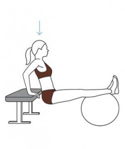
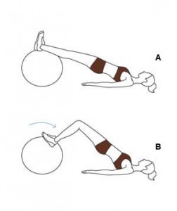
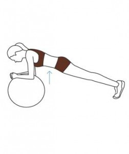
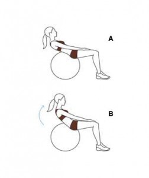
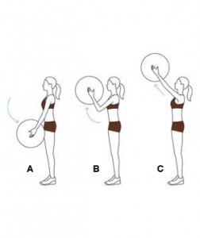
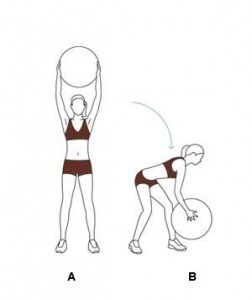

15 minutowy trening na piłce gimnastycznej może przynieść spore rezultaty, warto więc poświęcić kilkanaście minut dziennie i popracować nad sylwetką.
Usiądź na ławce treningowej lub na stabilnym krześle z rękami umieszczonymi na krawędzi, palce wskazujące wysunięte są do przodu. Połóż łydki i kostki na szczycie piłki do ćwiczeń. Wyprostuj ramiona i unieś biodra z ławki, a następnie zegnij ramiona w celu obniżenia swojego ciała obok ławki, a potem wyprostuj je do wyjściowej pozycji. Ćwiczenie powtórz 15
Połóż się na podłodze z rękami wzdłuż ciała, a kostkami i łydkami na piłce do ćwiczeń. Podnieś biodra bez wyginania pleców (ciało utrzymuje się dzięki wsparciu mięśni brzucha). Trzymając cały czas podniesione biodra , ugnij kolana i przetocz piłkę do siebie za pomocą nóg i z powrotem do położenia początkowego. Ćwiczenie powtórz 15 razy.
Oprzyj się ramionami na piłce, utrzymując całe ciało wyprostowane. Mocno trzymaj całe ciało napięte, zwracając uwagę na mięśnie brzucha i szyi. Wytrzymaj w tej pozycji 45 sekund.
Połóż się na piłce, opierając się na niej w połowie pleców, z wyprostowanymi ramionami, a dłoniami położonymi na udach. Podnieś górną część ciała do przodu, cały czas trzymając ręce na udach. Wróć do pozycji wyjściowej. Powtórz ćwiczenie 15 razy.
Trzymaj piłkę przed sobą, a stopy postaw w lekkim rozkroku. Z wyprostowanymi ramionami prowadź piłkę w dół w kierunku ud. Zegnij łokcie i podnieś piłkę do poziomu oczu. Ściśnij mocno piłkę i wróć do pozycji początkowej. Ćwiczenie powtórz 15 razy.
Trzymaj piłkę nad głową z prostymi ramionami i nogami lekko rozstawionymi. Trzymając plecy płasko, a mięśnie brzucha spięte, zegnij kolana i skręć tułów, przenosząc jednocześnie piłkę w kierunku lewej stopy. Następnie powróć do pozycji początkowej z piłką nad głową i wykonaj ponowny skręt w prawą stronę. Ćwiczenie powtórz 15 razy.
